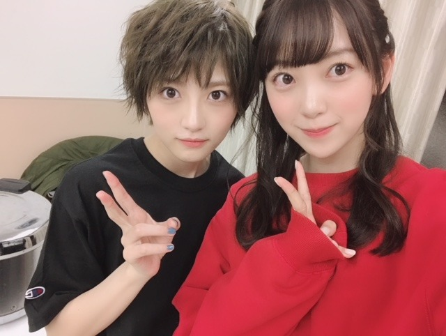

2018/1216Sun優しさと強さ
若月さんが先日のセレモニーで乃木坂46を卒業されました。私達2期生が加入したての頃、
プリンシパル公演の休憩中に先輩達に初めて挨拶をしにいった時、緊張で固まって立ち尽くしていた私達の方に若さんが来てくれて、よろしくねって言ってくださったあの瞬間。嬉しさとドキドキした気持ち。一生忘れません。
私達2期生を一番にメンバーとして、後輩として受け入れてくださったのが若さんでした。
最後のセレモニーでも2期研究生曲のボーダーを選んでくださったことも本当に本当に嬉しくて。
3期生が活躍して4期生も入ってくる今、2期生も頑張らなきゃって。見てくれてる人応援してくれてる人の為にも改めて頑張りたいって思えました。
どんなことにも真面目に、地に足をつけて自分や周りを客観視しながら目標に立ち向かう姿は本当にかっこいいし無邪気にくしゃっと笑う顔も大好きだし私が言うことに優しくツッコミをしてくれたり、バレッタの時から今までずっと変わらず優しく接してくださいました。
私も若さんみたいにさりげなく誰かの力になれるような気遣いのできる人になりたいです。
卒業発表されてから何回かメールはしたけれど
ライブ終わりに、あんたは大丈夫だよって
肩をポンっとしてくたさったのが余計に切なくて寂しくて...
でもそんな若さんの優しさや力強さまっすぐさを私も大切にもっともっと頑張ろうって思いました。
若さん！お疲れ様でした！
アイドルの若さんも大好きでしたがお芝居をしている姿も大好きなのでこれからのご活躍も楽しみにしています☺︎
ありがとうございました☺︎

敬意も込めて、、ずっとずっと大好きです。
2018/12/16 18:06


コメント(334)
体調に気をつけてね！
堀ちゃんのブログいつも見てます！これからもずっと応援してます！
堀さんも後輩達から見ていい先輩でいてあげて下さい。
若の卒業しちゃったな…
いつになってもメンバーの卒業は慣れないものですね…寂しい
二期生頑張れ！！ずっと応援するね！！
あいほ
今日もお疲れ様です
乃木坂は、初めは可愛いイメージが強かったのですが、ここ数年はカッコよさも併せ持つ最強のアイドルグループだと思います
その中で若月さんは乃木坂の中でカッコいいを象徴するメンバーの1人だったと思います
堀ちゃんが新人だった頃に一番に受け入れてくれた先輩だと言うことなので、今度は堀ちゃんが4期生を受け入れてあげて下さい（今度は堀ちゃんの番だね）
もう一つ体調は大丈夫ですか？
握手会の事はまた、次でコメントするのでしっかり休んで下さい（握手会のブログ書いてくれたら嬉しいです）
本当に大事にして下さい
ありがとうこざいました
ブログ更新お疲れ様です。
若様との思い出、ありがとうございます。
いい先輩に出逢いましたね。
これからは堀ちゃんが引っ張ってくださいね。
体調はよくなりましたか？
お大事になさってくださいね
ではまた。
ぽてとです！
未央奈の若月への想いが凄く伝わってきた
ブログだった！
ファイト2期生！
同じく自分もめっちゃ応援してる！
ブログ更新ありがとうございます
体調大丈夫ですか？ この前のレコメンでかなりやばい声をしていたから心配していたんですが、絶対に無理はしないでくださいね。
FNS歌謡祭では、長時間にわたっての放送だったし、夢のアイドルグループでの活躍、その上ラストまでで、レコメンも遅れての参加。それであの声だったので、ホントびっくりでしたよ。
これから暮れにかけて、忙しい毎日になりそうなので、くれぐれも気をつけてくださいよ。
それにしても若さま、ホントお世話になりましたね。お人柄というか、生駒ちゃんと若さまがいなかったら、今の未央奈はいませんよね。ホントありがたいことです。
お世話になったことは後輩へも伝えたい、よ～く分かりますその気持ち。でもむ大丈夫ですよ。ちゃんと３期生の後輩には伝わっているし、それにオギユカちゃんともつながっているし‥‥‥。また４期生の子たちにも、尊敬される先輩になってくださいね。私たちも応援しております。
若の卒業寂しいよね。
若はバレッタの選抜発表の時もニコニコしてて、乃木中とか見てても本当にいつも優しくて、真面目で誠実な人だなぁと思っていました。
堀ちゃんも助けられてたんやね(´･_･`)
卒業セレモニーで、ボーダーを選曲したって聴いた時も嬉しかったなぁ。
私は2期生が大好きだし、みんなの努力もたくさん見てきたし、いつでも応援してます！
堀ちゃんには若の乃木坂に対する思い受け継いで、これからの乃木坂を引っ張っていってほしいな！
寂しいけど、新たなスタート、頑張ってね！
応援してます☺︎
体調大丈夫？ お大事にしてね。
ではでは✋
P.S. ブログの写真、若がかっこよすぎて、堀ちゃんの彼女感が
凄い 笑
4期生からしたら大先輩だから気を引き締めないとね(^^)
昨日のことのように思い出します。
若からの大丈夫だよという言葉はそれだけで心の支えになるかもだけど素直にそう思っているからこそかけた言葉だと思う。
ツーショット最高‼︎
これから年末にかけてますます忙しくなると思うけど体調に気をつけて頑張ってね！
若ちゃんの卒業は、何だかまだ実感がないな～。
さっき見てた乃木中に居たりするから、余計にね(^_^;)
実感するのは、もう少し後になるかな。
川後Pのイベントの模様をSHOWROOMで見てたら、2年前に卒業した、まいまいが出てきてビックリしちゃった(^_^;)
2人で喋っているのを見ていたら、乃木坂46ってやっぱり良いグループだなって思いました(^_^)
やっぱ乃木坂だな！
それじゃ、またね(^o^)／
3期生が乃木坂46に加入した最初の頃から
未央奈は3期生に先輩として優しく接してるなーって
思ったことが何度もあったよ。
それって、未央奈が若月さんのような先輩の優しさに触れてきて、
そういった優しさが、未央奈から3期生へ受け継がれているのかなーって
ふと思った。
そこで、3期生が受け取った優しさと強さは、
若月さんが持っているものと、未央奈にしかないものが合わさった
最強の優しさと強さなんじゃないかなー
そうやって優しさと強さが後輩へ受け継がれていく乃木坂46は、
本当に素敵だし、これからも本当に楽しみだなーって思ったよ。
そう言えば、未央奈、のどは大丈夫？
寒い日が続くけど、体を暖かくして大事にしてね。
写真可愛い過ぎて震えました(笑)
ずっと応援してます！
めちゃくちゃカッコいいですよね
同時に信用しきっている呼びかけ方ですよね^_^
ここが正念場だよ。
寒い体に気をつけて頑張ってね。
ありがとう！！！
未央奈の頑張りこれからも応援します！推します！
15日握手会ありがとう！
喉、お大事にね！
1月14日の握手会楽しみです〜^ ^
未央奈、体調は大丈夫？毎日どんどん寒くなってくるから体調管理大変やんなぁ
未央奈の素直に人に感謝やお礼、仲間を大事に思うその人柄も大好きでずっと応援してきたし、これからも応援するよ
未央奈の活躍と二期生全員の活躍を心から楽しみに毎日を僕も頑張って生きていこうと思います。
未央奈、大好きです
若さんが卒業するのは寂しいけど若さんの居なくなりポッカリと空いた穴を乃木坂のみんなで埋めて頑張ってください
これからの乃木坂を期待して待ってまーす
俺は若月さんの卒業セレモニーに参加したんだ。
若月さんの演出力のスゴさやファンを最後まで楽しませよう・笑顔にしようという気持ちが伝わってきて、最高のセレモニーだったよ。
それにボーダーを若月さんが選んでくれたのは、2期生に対するエールだと思っていて、乃木坂としての最後の舞台なのに、後輩のことを思いやる優しさは流石だよね。
若月さんが未央奈にかけた言葉「あんたは大丈夫だよ」は短い言葉だけど、たくさんの意味や気持ちの詰まった言葉なんだろうと考えてたら涙が・・・
本当に若月さんは素敵な方でした。
卒業しても頑張ってほしいです。
ゴロ～
若様が卒業してしまって寂しいね。
若様は本当に素晴らしい人！
わかっていたけど、みんなのブログを読んであらためて感じました。
ボーダーを選曲するあたり2期生愛が伝わってきて
感動しました！
未央奈ちゃんもきっと若様のように気遣いのできる人になれるよ！
たくさんの愛で3期生そして4期生を支えてあげてね！
2期生だからこそ感じること、できることがあると思います！
未央奈ちゃんファイト！！
いつも胸が熱くなります。ありがとう。
応援してるよ
若月佑美ちゃんの卒業、寂しいですね。
前面に立ってグループをぐいぐい引っ張っていくようなタイプではなかったけど、全体のバランスを見ながら、チームをまとめ上げるような存在。
誰からも信頼されていて、グループの精神的な支柱のような人だった気がします。
サッカーでいえば、ボランチのような存在。
フォーワードのようにバンバン点を取ったり、派手な仕事をするわけではないけど、チームが全体としてしまう機能するために必要な仕事を淡々と献身的にやっている感じがしました。
佑美ちゃんの卒業はグループにとってとても大きなことだけど、残ったメンバーでその穴を埋められるように頑張っていくしかないですね…‼︎
前線でバンバン点を取っていた人、チームの前面に立って引っ張っていた人の卒業も、もうすぐです。
佑美ちゃんのこともなーちゃんのことも、誰かがそのままそっくり取って代わろうとするよりは、みんなで力を合わせて、その役目を少しずつ引き取るというのがいいかもしれませんね♪
大丈夫。
簡単なことではないけど、今の乃木坂なら、必ずそれができると信じてます…‼︎
そうそう、最近、未央奈が3期生のブログに登場するのをよく見ます♪
未央奈も、佑美ちゃんに負けず劣らず、後輩に慕われる先輩になってますね‼︎
すごく頼もしいです♪
さて、いよいよ2018年も終わりに近づいてきましたね。
日々の変化も前向きに受け入れて、努力・感謝・笑顔を忘れず、一歩一歩着実に前に進んでいきましょう‼︎
そして、佑美ちゃんの未来が明るく楽しいものになりますように♪
ではでは、また。
今日も未央奈にとっていい1日になりますように♪
若とのブログ写真、仲良し姉妹みたいでよかよか
体調に気をつけて下さいね。
Mステ、レコ大、紅白楽しみにしてます☺
ほーりーまたね ✨
若さんの卒業、やっぱり寂しいですね。
俺はセレモニーには行けなかったので、卒業されてしまった実感がまだないっていうか。
乃木坂46としての若さんの最後に見た姿は、舞台‘鉄コン筋クリート’を観に行ったときのものになりました。
アイドルとしての若さんも魅力的だったけど、芝居をしている若さんの姿が本当に魅力的で。
俺の座席が偶然かなり良いところだったってのがあって、表情の細部まで観ることができて、この人は役者が似合ってるって思いました。
アイドルとしての姿はもう見られないとは思うけど、今後の活躍には注目したいと思います。
未央奈の体調は回復したかな？
一昨日5部に最後行こうとしてたときに、欠席の案内があって、心配してるよ。
また1月に会いに行くので、元気な姿見せてください！
元気な未央奈が1番やからね！
また、握手会会場でファンレターも送らせて頂きました。
見て頂けたら幸いです。
若様ブログありがとう。未央奈ちゃんの若様に対する考えがひしひしと伝わってきました。
体調は良くなったのかな？ハードなスケジュールでしょうから、頑張って乗りきってくださいね。
乃木坂46と頑張ってるcuteでsmartな未央奈ちゃんを応援しています。
若様の卒業を実感してきた今日この頃です…
二期生頑張ってねずっと応援してます！！
若様の卒業セレモニー、良いセレモニーだったみたいでよかったです。
やっぱ乃木坂だな！
よい一日を！
（うっ…さすがのかわいさ…
「あんたは大丈夫だよ」
ただの一言だけど心強くもあり頼もしい言葉だね…。もしこの言葉に不安な気持ちも出てくるならそれはまだまだ成長できるということだと思うし、この不安がなくなるくらいまで頑張れば色々な自信に繋がるのかなと思います。
あと、身体の調子は大丈夫かな…？
もちろんプロとして仕事を優先しなきゃいけないって思う時もあるだろうけど、結局は元気な姿を見せてくれることが一番安心するし、嬉しいです。だから、無理せず頑張って欲しいかな♪
色々と生意気ですいませんorz
これからも応援してます〜
4期生のお見立会の様子を情報番組などで観ましたが、ポテンシャルが高そうなので、期待しています♪☆
堀ちゃんには、いつも癒される(^o^)
ワンちゃん飼ってるよねー
自分も動物好きだから、何か飼いたい！
では、身体に気をつけてね
コメントする